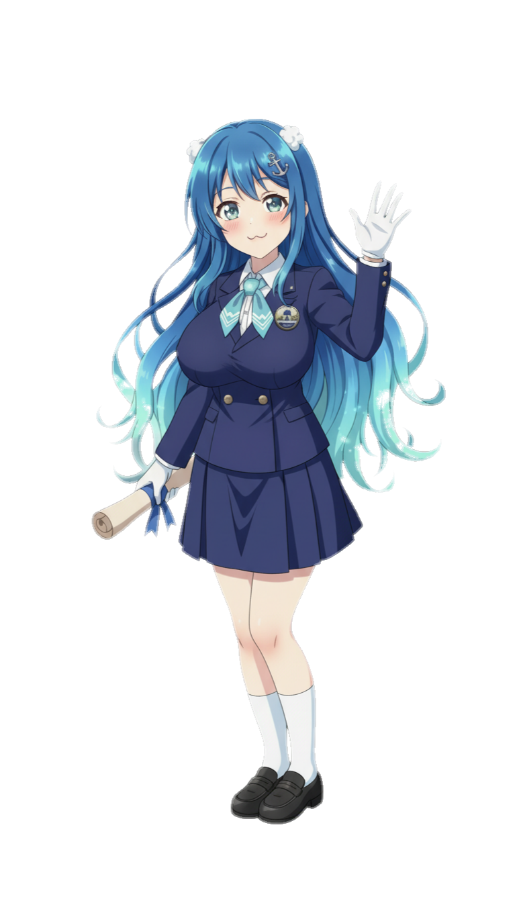
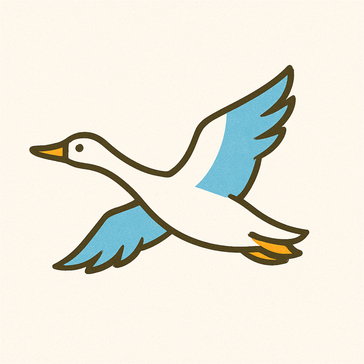
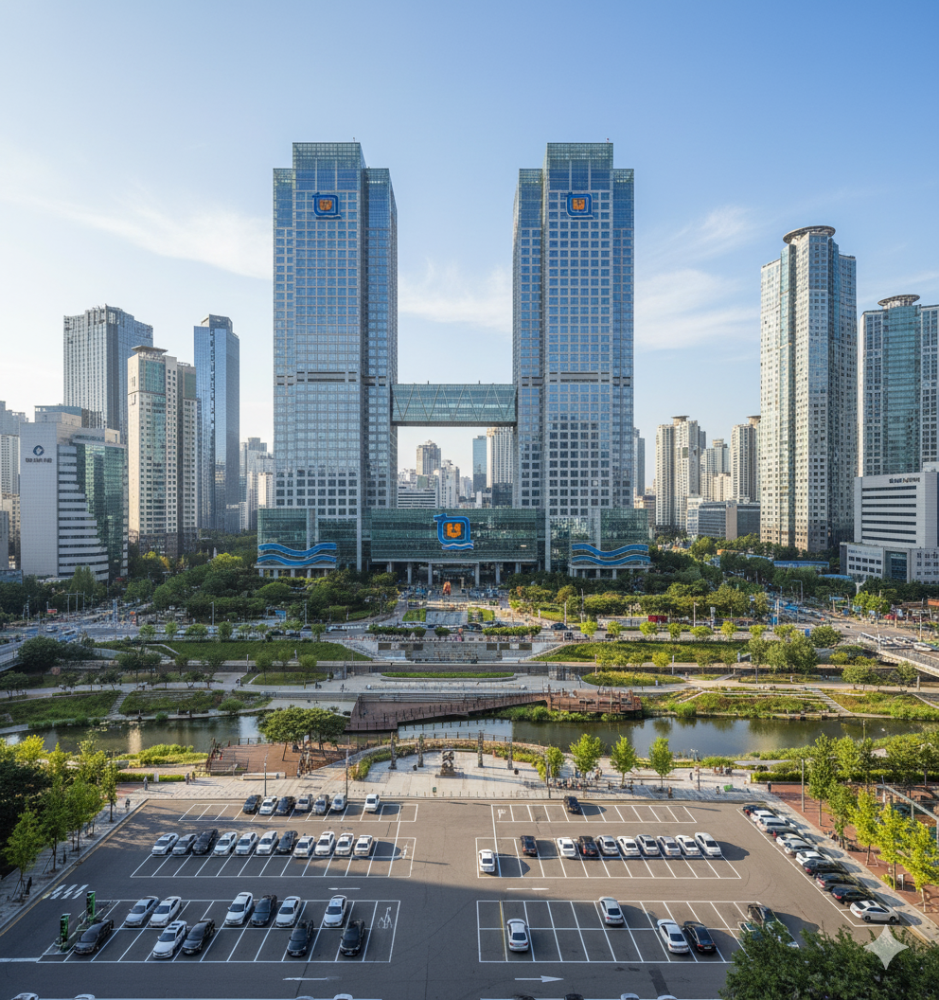
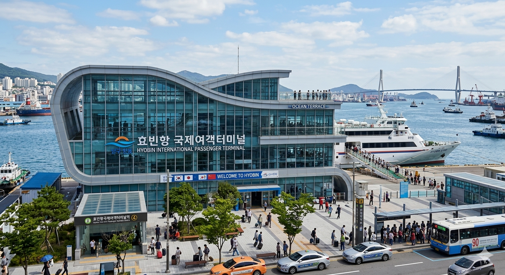

"안녕? 나는 효빈시를 가장 사랑하는 젊은 시장, 박효빈이야!"
우리 효빈광역시의 이름은 '효도 효(孝)'와 '빛날 빈(彬)' 자를 써서 '어른을 공경하고 사랑하는 마음이 아름답게 빛나는 도시'라는 멋진 뜻을 가지고 있단다! 내 이름인 '효빈'에 들어가는 한자랑 똑같아서 나도 시장이 되었을 때 정말 신기했단다.
나는 우리 어린이 친구들이 깨끗한 공기를 마시며 마음껏 뛰어놀고, 전 세계 친구들이 모이는 애니메이션 축제(HAF)도 잔뜩 즐길 수 있는 신나는 도시를 만들고 있어.
우리 어린이 시청에서 효빈시의 멋진 비밀과 역사들을 하나씩 탐험해 볼까?
우리 동네는 어디에 있을까?
우리 자랑스러운 효빈광역시는 광주광역시의 남서쪽, 무안반도 이서에 넓고 맑은 바다를 품고 자리 잡고 있어요!
효빈시는 커다란 동네들이 모여서 만들어졌는데, 모두 합쳐서 8개의 구와 1개의 군으로 이루어져 있답니다. 우리 집은 어디에 속해 있는지 지도를 볼 때 찾아보아요!
효빈시의 8구 1군 가족들
효빈광역시의 반짝이는 상징물!

한바다
우리 효빈시 앞바다를 지키는 씩씩한 친구야! 바다처럼 넓은 마음을 가졌어.

기러기 (히버히)
친구들과 함께 줄맞춰 높이 날아오르는 기러기처럼 우리도 꿈을 향해 날아볼까?
어린이 탐험대! 우리 고장 명소
 인기만점!
인기만점!
당가동 파스텔블루길
애니메이션 주인공들을 만날 수 있는 HAF 축제의 중심 거리! 귀여운 굿즈샵이 가득해요.

효빈천 자전거길
가족들과 함께 자전거를 타며 맑은 공기를 마셔요. 철새 기러기(히버히)도 볼 수 있답니다.

효빈항 해양공원
넓은 바다를 보며 뛰어놀 수 있는 공원! 마스코트 한바다 동상과 사진을 찍어보세요.
무지개빛 대중교통 탐험 🚌🚇
재미있는 역사 이야기
아주 옛날, 나쁜 시장님(윤대환)이 우리가 사랑하는 전차를 낡게 내버려 두고 버스 회사가 횡포를 부리게 한 적이 있었어요. 하지만 용감한 효빈 시민들이 똘똘 뭉쳐 이를 막아냈고, 분홍색 노면전차(트램) 7호선이 훨씬 더 멋진 모습으로 새단장했어요! 그 덕분에 지금의 멋진 무지개색 교통망이 완성되었답니다.
🚇 우리는 무슨 색 전철을 탈까?
🚌 3세대 완전 준공영제 무지개 버스!
꿀팁: 버스와 전철을 탈 때 귀를 쫑긋 세워보세요! BanG Dream!, 러브라이브 등 유명한 애니메이션 주인공들이 들려주는 명예 홍보대사 안내방송을 들을 수 있답니다!
도전! 나도 효빈광역시 명예 시장!
효빈시에 대해 얼마나 잘 알고 있나요?
3가지 퀴즈를 모두 맞히고 자랑스러운 어린이 명예 시장증을 발급받아 보세요!